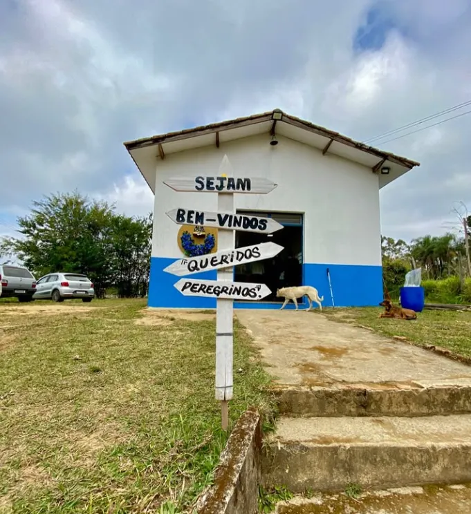

Como nasceu o Anjos no Caminho e por que seguimos acolhendo peregrinos todos os dias.
O Grupo Anjos no Caminho nasceu de um propósito inspirado pelo Encontro de Casais com Cristo. Tudo começou com oito casais unidos pela fé e pelo desejo de servir. A ideia surgiu a partir de Rosa Amélia, dona de uma padaria situada no bairro Vista Alegre, que fica no Caminho da Fé. Observando os peregrinos que passavam por ali, ela presenciava queixas sobre a falta de apoio naquele trecho do percurso (km 14).
Movida por compaixão e inspiração, Rosa sugeriu que o grupo se unisse para acolher os peregrinos, com carinho, refeições e orações. O propósito começou no dia 12 de outubro, data que, com o tempo, se tornaria simbólica para todos. O gesto simples cresceu: primeiro foi um dia de acolhida, depois uma semana, um mês... e, aos poucos, o período de serviço se estendeu, alcançando desde a segunda quinzena de agosto até outubro.
Atualmente, o grupo celebra onze anos de caminhada e três anos de dedicação diária no Caminho. Dos oito casais iniciais, permaneceram dois casais firmes: Edson e Valquíria, Carlão e Claudinha, acompanhados de voluntários generosos que mantêm viva a missão.
Ao longo dessa jornada, o grupo aprendeu que acolher bem também é evangelizar. Cada sorriso, cada gesto de cuidado, cada palavra de incentivo aos peregrinos é uma forma de expressar o amor de Maria e o verdadeiro espírito cristão que os move desde o início.
Quero ser voluntário
Rosa Amélia, dona de uma padaria no bairro Vista Alegre, no Caminho da Fé, ouvia as queixas dos peregrinos sobre a falta de apoio no km 14 do percurso.
Oito casais, inspirados pelo Encontro de Casais com Cristo, se unem para acolher os peregrinos com carinho, refeições e orações.
O que começou como um único dia de acolhida virou uma semana, depois um mês, até se estender da segunda quinzena de agosto até outubro.
Dos oito casais iniciais, dois seguem firmes — Edson e Valquíria, Carlão e Claudinha — ao lado de voluntários generosos, com 3 anos de dedicação diária no Caminho.